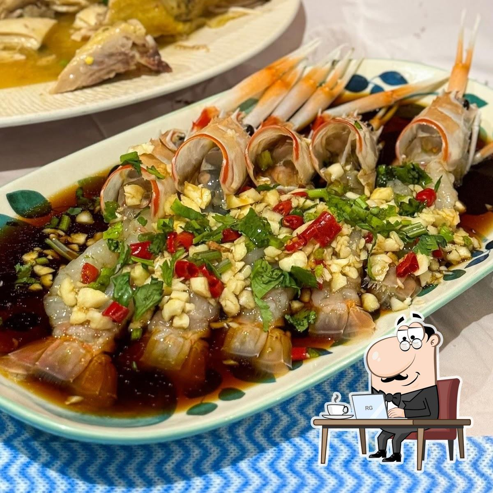

★★★★½
14.5/20
The Age · Critics' Pick
Our Story
A Mother-Daughter Kitchen
In a hidden arcade off Doncaster Road, Aunty Ruth runs the show — a one-woman kitchen powered by decades of Chaozhou home cooking and a deep love for Malaysian flavours. Her daughter works the front of house, greeting every guest like family.
There are no shortcuts here. Every oyster omelette is fried to order. Every pot of Bak Kut Teh simmers for hours. The duck is braised the way Ruth's mother taught her in Shantou — slow, patient, and seasoned by instinct.
"I don't cook to impress. I cook the way I would for my own children — with love, and a little bit of chilli." — Aunty Ruth, Chef & Owner
With just 30 seats and two pairs of hands, Chaozhou Malaya is as intimate as it gets. Named a Critics' Pick by The Age and loved by locals who know to book ahead — this is the kind of place Melbourne does best.